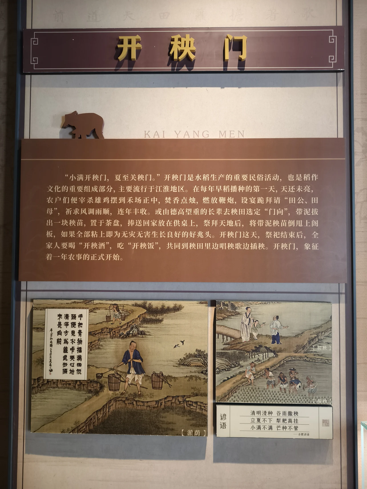

有史可考的包拯
奉亲辞官、监察谏诤、整饬吏治、治理端州及严守家风等内容，有历史文献或后世史家记载作为依据。
从历史人物到民间“包青天”，理解真实生平、精神内核与文化形象之间的联系和区别。
包拯（999—1062），字希仁，北宋庐州合肥人。1027年考中进士后，他因奉养双亲暂未出仕；父母去世、守丧期满后，于1037年开始仕宦生涯。
他先后在地方和中央任职，做过知县、知州、知府，也担任监察、谏官、财政和枢密等职务。历史上的包拯并不只是文学作品里的“断案神探”，更是一位重视吏治、财政、监察与民生的政治人物。
“少有孝行，闻于乡里；晚有直节，著在朝廷。”
——欧阳修对包拯早年孝行与晚年直节的概括

今安徽合肥一带，肥东被视为包拯出生与成长的重要故里。
因父母年老，选择奉亲，未立即赴任。
历任地方官及监察、谏官、财政等职，后曾权知开封府。
其清廉刚正的形象在历史记载、民间叙事与戏曲文学中不断流传。
五个关键词并非孤立标签，而是包拯个人修养、家庭伦理和公共责任的共同体现。
进士及第后奉亲不仕，体现对父母和家庭责任的重视。
严于自律，家训明确反对后世子孙为官贪赃。
关注制度和民情，以务实方式处理地方治理与财政问题。
敢于弹劾权贵近臣，坚持公正用权和依法办事。
尽职进谏、直陈得失，将朝廷治理和百姓利益置于个人得失之前。
包公形象经过数百年传播，形成了历史人物、文学角色和民间信仰相互叠加的文化现象。
奉亲辞官、监察谏诤、整饬吏治、治理端州及严守家风等内容，有历史文献或后世史家记载作为依据。
黑脸、额月、龙头铡等视觉符号主要来自戏曲舞台和后世艺术塑造，象征刚直、明察与不徇私情。
“铡美案”“狸猫换太子”等故事影响深远，但属于小说、戏曲和民间传说，不宜直接等同于历史事实。
《包拯家训》以严厉措辞告诫后世子孙：为官若贪赃枉法，不得回归本家，也不得葬入祖茔。其核心并非个人声誉，而是要求家族成员以清白为立身之本。
园区将家训、奉亲、家风和仕宦品格连在一起，使“廉”不只是官场规则，也成为从家庭教育延伸到公共责任的价值体系。

 文化展陈空间
文化展陈空间 文献资料展陈
文献资料展陈 展厅内部包公像与文献
展厅内部包公像与文献 主题展板
主题展板
历史图文